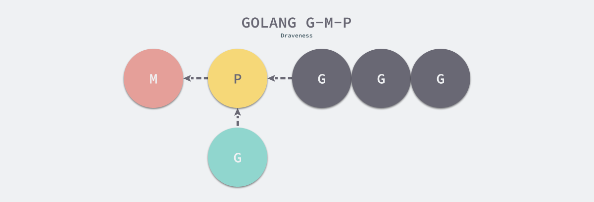
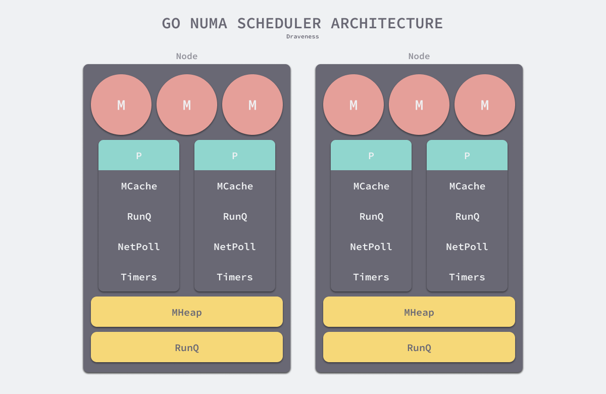
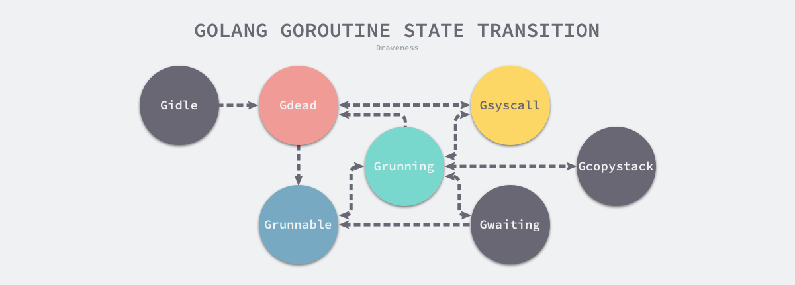
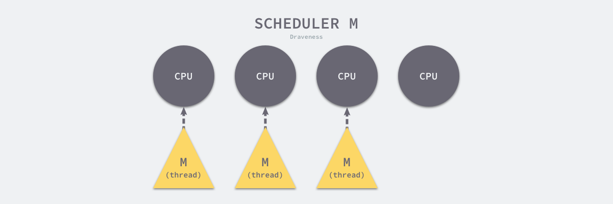
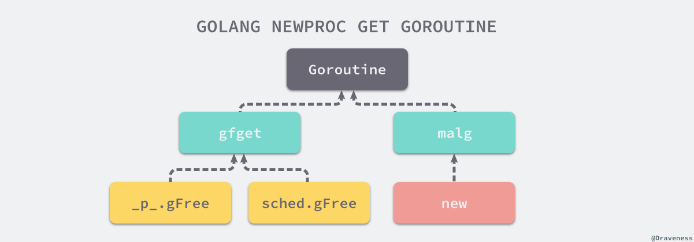
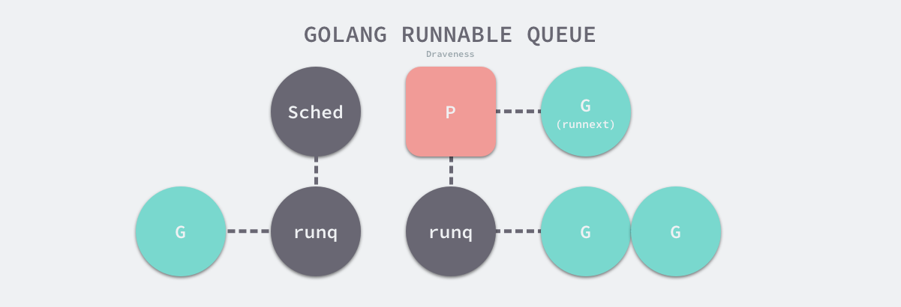
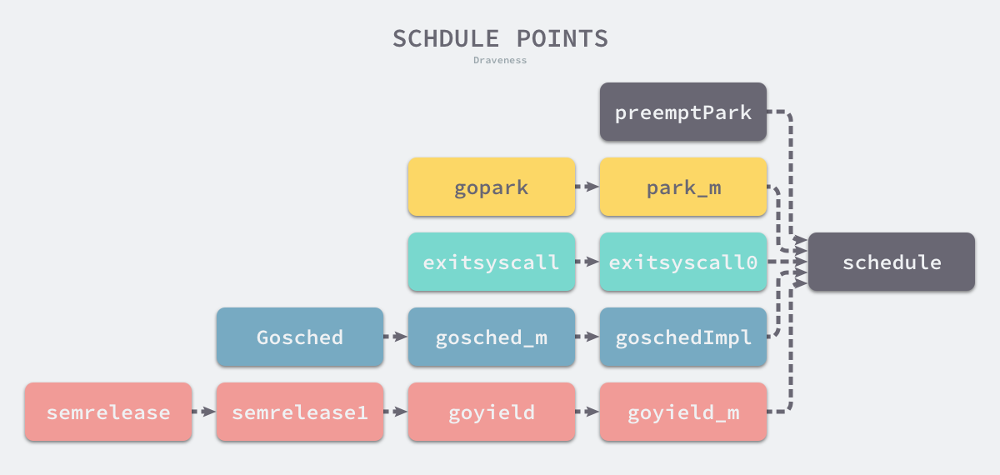
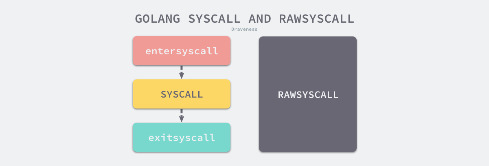

6.5 调度器 #
Go 语言在并发编程方面有强大的能力，这离不开语言层面对并发编程的支持。本节会介绍 Go 语言运行时调度器的实现原理，其中包含调度器的设计与实现原理、演变过程以及与运行时调度相关的数据结构。
谈到 Go 语言调度器，我们绕不开的是操作系统、进程与线程这些概念，线程是操作系统调度时的最基本单元，而 Linux 在调度器并不区分进程和线程的调度，它们在不同操作系统上也有不同的实现，但是在大多数的实现中线程都属于进程：
图 6-25 进程和线程
多个线程可以属于同一个进程并共享内存空间。因为多线程不需要创建新的虚拟内存空间，所以它们也不需要内存管理单元处理上下文的切换，线程之间的通信也正是基于共享的内存进行的，与重量级的进程相比，线程显得比较轻量。
虽然线程比较轻量，但是在调度时也有比较大的额外开销。每个线程会都占用 1M 以上的内存空间，在切换线程时不止会消耗较多的内存，恢复寄存器中的内容还需要向操作系统申请或者销毁资源，每一次线程上下文的切换都需要消耗 ~1us 左右的时间1，但是 Go 调度器对 Goroutine 的上下文切换约为 ~0.2us，减少了 80% 的额外开销2。
图 6-26 线程与 Goroutine
Go 语言的调度器通过使用与 CPU 数量相等的线程减少线程频繁切换的内存开销，同时在每一个线程上执行额外开销更低的 Goroutine 来降低操作系统和硬件的负载。
6.5.1 设计原理 #
今天的 Go 语言调度器有着优异的性能，但是如果我们回头看 Go 语言的 0.x 版本的调度器会发现最初的调度器不仅实现非常简陋，也无法支撑高并发的服务。调度器经过几个大版本的迭代才有今天的优异性能，历史上几个不同版本的调度器引入了不同的改进，也存在着不同的缺陷:
- 单线程调度器 ·
0.x
- 只包含 40 多行代码；
- 程序中只能存在一个活跃线程，由 G-M 模型组成；
- 多线程调度器 ·
1.0
- 允许运行多线程的程序；
- 全局锁导致竞争严重；
- 任务窃取调度器 ·
1.1
- 引入了处理器 P，构成了目前的 G-M-P 模型；
- 在处理器 P 的基础上实现了基于工作窃取的调度器；
- 在某些情况下，Goroutine 不会让出线程，进而造成饥饿问题；
- 时间过长的垃圾回收（Stop-the-world，STW）会导致程序长时间无法工作；
- 抢占式调度器 ·
1.2
~ 至今
- 基于协作的抢占式调度器 - 1.2 ~ 1.13
- 通过编译器在函数调用时插入抢占检查指令，在函数调用时检查当前 Goroutine 是否发起了抢占请求，实现基于协作的抢占式调度；
- Goroutine 可能会因为垃圾回收和循环长时间占用资源导致程序暂停；
- 基于信号的抢占式调度器 - 1.14 ~ 至今
- 实现基于信号的真抢占式调度；
- 垃圾回收在扫描栈时会触发抢占调度；
- 抢占的时间点不够多，还不能覆盖全部的边缘情况；
非均匀存储访问调度器 · 提案
- 对运行时的各种资源进行分区；
- 实现非常复杂，到今天还没有提上日程；
除了多线程、任务窃取和抢占式调度器之外，Go 语言社区目前还有一个非均匀存储访问（Non-uniform memory access，NUMA）调度器的提案。在这一节中，我们将依次介绍不同版本调度器的实现原理以及未来可能会实现的调度器提案。
单线程调度器 #
0.x 版本调度器只包含表示 Goroutine 的 G 和表示线程的 M 两种结构，全局也只有一个线程。我们可以在 clean up scheduler 提交中找到单线程调度器的源代码，在这时 Go 语言的调度器还是由 C 语言实现的，调度函数 runtime.scheduler:9682400 也只包含 40 多行代码 ：
1 | static void scheduler(void) { |
C
该函数会遵循如下的过程调度 Goroutine：
- 获取调度器的全局锁；
- 调用
runtime.gosave:9682400保存栈寄存器和程序计数器； - 调用
runtime.nextgandunlock:9682400获取下一个需要运行的 Goroutine 并解锁调度器； - 修改全局线程
m上要执行的 Goroutine； - 调用
runtime.gogo:9682400函数运行最新的 Goroutine；
虽然这个单线程调度器的唯一优点就是能运行，但是这次提交已经包含了 G 和 M 两个重要的数据结构，也建立了 Go 语言调度器的框架。
多线程调度器 #
Go 语言在 1.0 版本正式发布时就支持了多线程的调度器，与上一个版本几乎不可用的调度器相比，Go 语言团队在这一阶段实现了从不可用到可用的跨越。我们可以在 pkg/runtime/proc.c 文件中找到 1.0.1 版本的调度器，多线程版本的调度函数 runtime.schedule:go1.0.1 包含 70 多行代码，我们在这里保留了该函数的核心逻辑：
1 | static void schedule(G *gp) { |
C
整体的逻辑与单线程调度器没有太多区别，因为我们的程序中可能同时存在多个活跃线程，所以多线程调度器引入了 GOMAXPROCS 变量帮助我们灵活控制程序中的最大处理器数，即活跃线程数。
多线程调度器的主要问题是调度时的锁竞争会严重浪费资源，Scalable Go Scheduler Design Doc 中对调度器做的性能测试发现 14% 的时间都花费在 runtime.futex:go1.0.1 上3，该调度器有以下问题需要解决：
- 调度器和锁是全局资源，所有的调度状态都是中心化存储的，锁竞争问严重；
- 线程需要经常互相传递可运行的 Goroutine，引入了大量的延迟；
- 每个线程都需要处理内存缓存，导致大量的内存占用并影响数据局部性；
- 系统调用频繁阻塞和解除阻塞正在运行的线程，增加了额外开销；
这里的全局锁问题和 Linux 操作系统调度器在早期遇到的问题比较相似，解决的方案也都大同小异。
任务窃取调度器 #
2012 年 Google 的工程师 Dmitry Vyukov 在 Scalable Go Scheduler Design Doc 中指出了现有多线程调度器的问题并在多线程调度器上提出了两个改进的手段：
- 在当前的 G-M 模型中引入了处理器 P，增加中间层；
- 在处理器 P 的基础上实现基于工作窃取的调度器；
基于任务窃取的 Go 语言调度器使用了沿用至今的 G-M-P 模型，我们能在 runtime: improved scheduler 提交中找到任务窃取调度器刚被实现时的源代码，调度器的 runtime.schedule:779c45a 在这个版本的调度器中反而更简单了：
1 | static void schedule(void) { |
Go
- 如果当前运行时在等待垃圾回收，调用
runtime.gcstopm:779c45a函数； - 调用
runtime.runqget:779c45a和runtime.findrunnable:779c45a从本地或者全局的运行队列中获取待执行的 Goroutine； - 调用
runtime.execute:779c45a在当前线程 M 上运行 Goroutine；
当前处理器本地的运行队列中不包含 Goroutine 时，调用 runtime.findrunnable:779c45a 会触发工作窃取，从其它的处理器的队列中随机获取一些 Goroutine。
运行时 G-M-P 模型中引入的处理器 P 是线程和 Goroutine 的中间层，我们从它的结构体中就能看到处理器与 M 和 G 的关系：
1 | struct P { |
C
处理器持有一个由可运行的 Goroutine 组成的环形的运行队列 runq，还反向持有一个线程。调度器在调度时会从处理器的队列中选择队列头的 Goroutine 放到线程 M 上执行。如下所示的图片展示了 Go 语言中的线程 M、处理器 P 和 Goroutine 的关系。

图 6-27 - G-M-P 模型
基于工作窃取的多线程调度器将每一个线程绑定到了独立的 CPU 上，这些线程会被不同处理器管理，不同的处理器通过工作窃取对任务进行再分配实现任务的平衡，也能提升调度器和 Go 语言程序的整体性能，今天所有的 Go 语言服务都受益于这一改动。
抢占式调度器 #
对 Go 语言并发模型的修改提升了调度器的性能，但是 1.1 版本中的调度器仍然不支持抢占式调度，程序只能依靠 Goroutine 主动让出 CPU 资源才能触发调度。Go 语言的调度器在 1.2 版本4中引入基于协作的抢占式调度解决下面的问题5：
- 某些 Goroutine 可以长时间占用线程，造成其它 Goroutine 的饥饿；
- 垃圾回收需要暂停整个程序（Stop-the-world，STW），最长可能需要几分钟的时间6，导致整个程序无法工作；
1.2 版本的抢占式调度虽然能够缓解这个问题，但是它实现的抢占式调度是基于协作的，在之后很长的一段时间里 Go 语言的调度器都有一些无法被抢占的边缘情况，例如：for 循环或者垃圾回收长时间占用线程，这些问题中的一部分直到 1.14 才被基于信号的抢占式调度解决。
基于协作的抢占式调度 #
我们可以在 pkg/runtime/proc.c 文件中找到引入基于协作的抢占式调度后的调度器。Go 语言会在分段栈的机制上实现抢占调度，利用编译器在分段栈上插入的函数，所有 Goroutine 在函数调用时都有机会进入运行时检查是否需要执行抢占。Go 团队通过以下的多个提交实现该特性：
- runtime: add stackguard0 to G
- 为 Goroutine 引入
stackguard0字段，该字段被设置成StackPreempt意味着当前 Goroutine 发出了抢占请求；
- 为 Goroutine 引入
- runtime: introduce preemption function (not used for now)
- 引入抢占函数
runtime.preemptone:1e112cd和runtime.preemptall:1e112cd，这两个函数会改变 Goroutine 的stackguard0字段发出抢占请求； - 定义抢占请求
StackPreempt；
- 引入抢占函数
- runtime: preempt goroutines for GC
- 在
runtime.stoptheworld:1e112cd中调用runtime.preemptall:1e112cd设置所有处理器上正在运行的 Goroutine 的stackguard0为StackPreempt； - 在
runtime.newstack:1e112cd中增加抢占的代码，当stackguard0等于StackPreempt时触发调度器抢占让出线程；
- 在
- runtime: preempt long-running goroutines
- 在系统监控中，如果一个 Goroutine 的运行时间超过 10ms，就会调用
runtime.retake:1e112cd和runtime.preemptone:1e112cd；
- 在系统监控中，如果一个 Goroutine 的运行时间超过 10ms，就会调用
- runtime: more reliable preemption
- 修复 Goroutine 因为周期性执行非阻塞的 CGO 或者系统调用不会被抢占的问题；
上面的多个提交实现了抢占式调度，但是还缺少最关键的一个环节 — 编译器如何在函数调用前插入函数，我们能在非常古老的提交 runtime: stack growth adjustments, cleanup 中找到编译器插入函数的出行，最新版本的 Go 语言会通过 cmd/internal/obj/x86.stacksplit 插入 runtime.morestack，该函数可能会调用 runtime.newstack 触发抢占。从上面的多个提交中，我们能归纳出基于协作的抢占式调度的工作原理：
- 编译器会在调用函数前插入
runtime.morestack； - Go 语言运行时会在垃圾回收暂停程序、系统监控发现 Goroutine 运行超过 10ms 时发出抢占请求
StackPreempt； - 当发生函数调用时，可能会执行编译器插入的
runtime.morestack，它调用的runtime.newstack会检查 Goroutine 的stackguard0字段是否为StackPreempt； - 如果
stackguard0是StackPreempt，就会触发抢占让出当前线程；
这种实现方式虽然增加了运行时的复杂度，但是实现相对简单，也没有带来过多的额外开销，总体来看还是比较成功的实现，也在 Go 语言中使用了 10 几个版本。因为这里的抢占是通过编译器插入函数实现的，还是需要函数调用作为入口才能触发抢占，所以这是一种协作式的抢占式调度。
基于信号的抢占式调度 #
基于协作的抢占式调度虽然实现巧妙，但是并不完备，我们能在 runtime: non-cooperative goroutine preemption 中找到一些遗留问题：
- runtime: tight loops should be preemptible #10958
- An empty for{} will block large slice allocation in another goroutine, even with GOMAXPROCS > 1 ? #17174
- runtime: tight loop hangs process completely after some time #15442
- …
Go 语言在 1.14 版本中实现了非协作的抢占式调度，在实现的过程中我们重构已有的逻辑并为 Goroutine 增加新的状态和字段来支持抢占。Go 团队通过下面的一系列提交实现了这一功能，我们可以按时间顺序分析相关提交理解它的工作原理：
- runtime: add general suspendG/resumeG
- 挂起 Goroutine 的过程是在垃圾回收的栈扫描时完成的，我们通过
runtime.suspendG和runtime.resumeG两个函数重构栈扫描这一过程； - 调用
runtime.suspendG时会将处于运行状态的 Goroutine 的preemptStop标记成true； - 调用
runtime.preemptPark可以挂起当前 Goroutine、将其状态更新成_Gpreempted并触发调度器的重新调度，该函数能够交出线程控制权；
- 挂起 Goroutine 的过程是在垃圾回收的栈扫描时完成的，我们通过
- runtime: asynchronous preemption function for x86
- 在 x86 架构上增加异步抢占的函数
runtime.asyncPreempt和runtime.asyncPreempt2；
- 在 x86 架构上增加异步抢占的函数
- runtime: use signals to preempt Gs for suspendG
- 支持通过向线程发送信号的方式暂停运行的 Goroutine；
- 在
runtime.sighandler函数中注册SIGURG信号的处理函数runtime.doSigPreempt； - 实现
runtime.preemptM，它可以通过SIGURG信号向线程发送抢占请求；
- runtime: implement async scheduler preemption
- 修改
runtime.preemptone函数的实现，加入异步抢占的逻辑；
- 修改
目前的抢占式调度也只会在垃圾回收扫描任务时触发，我们可以梳理一下上述代码实现的抢占式调度过程：
程序启动时，在
runtime.sighandler中注册SIGURG信号的处理函数runtime.doSigPreempt；在触发垃圾回收的栈扫描时会调用
runtime.suspendG
挂起 Goroutine，该函数会执行下面的逻辑：
- 将
_Grunning状态的 Goroutine 标记成可以被抢占，即将preemptStop设置成true； - 调用
runtime.preemptM触发抢占；
runtime.preemptM会调用runtime.signalM向线程发送信号SIGURG；操作系统会中断正在运行的线程并执行预先注册的信号处理函数
runtime.doSigPreempt；runtime.doSigPreempt函数会处理抢占信号，获取当前的 SP 和 PC 寄存器并调用runtime.sigctxt.pushCall；runtime.sigctxt.pushCall会修改寄存器并在程序回到用户态时执行runtime.asyncPreempt；汇编指令
runtime.asyncPreempt会调用运行时函数runtime.asyncPreempt2；runtime.preemptPark会修改当前 Goroutine 的状态到_Gpreempted并调用runtime.schedule让当前函数陷入休眠并让出线程，调度器会选择其它的 Goroutine 继续执行；
上述 9 个步骤展示了基于信号的抢占式调度的执行过程。除了分析抢占的过程之外，我们还需要讨论一下抢占信号的选择，提案根据以下的四个原因选择 SIGURG 作为触发异步抢占的信号7；
- 该信号需要被调试器透传；
- 该信号不会被内部的 libc 库使用并拦截；
- 该信号可以随意出现并且不触发任何后果；
- 我们需要处理多个平台上的不同信号；
STW 和栈扫描是一个可以抢占的安全点（Safe-points），所以 Go 语言会在这里先加入抢占功能8。基于信号的抢占式调度只解决了垃圾回收和栈扫描时存在的问题，它到目前为止没有解决所有问题，但是这种真抢占式调度是调度器走向完备的开始，相信在未来我们会在更多的地方触发抢占。
非均匀内存访问调度器 #
非均匀内存访问（Non-uniform memory access，NUMA）调度器现在只是 Go 语言的提案9。该提案的原理就是通过拆分全局资源，让各个处理器能够就近获取，减少锁竞争并增加数据的局部性。
在目前的运行时中，线程、处理器、网络轮询器、运行队列、全局内存分配器状态、内存分配缓存和垃圾收集器都是全局资源。运行时没有保证本地化，也不清楚系统的拓扑结构，部分结构可以提供一定的局部性，但是从全局来看没有这种保证。

图 6-28 - Go 语言 NUMA 调度器
如上图所示，堆栈、全局运行队列和线程池会按照 NUMA 节点进行分区，网络轮询器和计时器会由单独的处理器持有。这种方式虽然能够利用局部性提高调度器的性能，但是本身的实现过于复杂，所以 Go 语言团队还没有着手实现这一提案。
小结 #
Go 语言的调度器在最初的几个版本中迅速迭代，但是从 1.2 版本之后调度器就没有太多的变化，直到 1.14 版本引入了真正的抢占式调度才解决了自 1.2 以来一直存在的问题。在可预见的未来，Go 语言的调度器还会进一步演进，增加触发抢占式调度的时间点以减少存在的边缘情况。
6.5.2 数据结构 #
相信各位读者已经对 Go 语言调度相关的数据结构已经非常熟悉了，但是我们在一些还是要回顾一下运行时调度器的三个重要组成部分 — 线程 M、Goroutine G 和处理器 P：

图 6-29 Go 语言调度器
- G — 表示 Goroutine，它是一个待执行的任务；
- M — 表示操作系统的线程，它由操作系统的调度器调度和管理；
- P — 表示处理器，它可以被看做运行在线程上的本地调度器；
我们会在这一节中分别介绍不同的结构体，详细介绍它们的作用、数据结构以及在运行期间可能处于的状态。
G #
Goroutine 是 Go 语言调度器中待执行的任务，它在运行时调度器中的地位与线程在操作系统中差不多，但是它占用了更小的内存空间，也降低了上下文切换的开销。
Goroutine 只存在于 Go 语言的运行时，它是 Go 语言在用户态提供的线程，作为一种粒度更细的资源调度单元，如果使用得当能够在高并发的场景下更高效地利用机器的 CPU。
Goroutine 在 Go 语言运行时使用私有结构体 runtime.g 表示。这个私有结构体非常复杂，总共包含 40 多个用于表示各种状态的成员变量，这里也不会介绍所有的字段，仅会挑选其中的一部分，首先是与栈相关的两个字段：
1 | type g struct { |
Go
其中 stack 字段描述了当前 Goroutine 的栈内存范围 [stack.lo, stack.hi)，另一个字段 stackguard0 可以用于调度器抢占式调度。除了 stackguard0 之外，Goroutine 中还包含另外三个与抢占密切相关的字段：
1 | type g struct { |
Go
Goroutine 与我们在前面章节提到的 defer 和 panic 也有千丝万缕的联系，每一个 Goroutine 上都持有两个分别存储 defer 和 panic 对应结构体的链表：
1 | type g struct { |
Go
最后，我们再节选一些作者认为比较有趣或者重要的字段：
1 | type g struct { |
Go
m— 当前 Goroutine 占用的线程，可能为空；atomicstatus— Goroutine 的状态；sched— 存储 Goroutine 的调度相关的数据；goid— Goroutine 的 ID，该字段对开发者不可见，Go 团队认为引入 ID 会让部分 Goroutine 变得更特殊，从而限制语言的并发能力10；
上述四个字段中，我们需要展开介绍 sched 字段的 runtime.gobuf 结构体中包含哪些内容：
1 | type gobuf struct { |
Go
sp— 栈指针；pc— 程序计数器；g— 持有runtime.gobuf的 Goroutine；ret— 系统调用的返回值；
这些内容会在调度器保存或者恢复上下文的时候用到，其中的栈指针和程序计数器会用来存储或者恢复寄存器中的值，改变程序即将执行的代码。
结构体 runtime.g 的 atomicstatus 字段存储了当前 Goroutine 的状态。除了几个已经不被使用的以及与 GC 相关的状态之外，Goroutine 可能处于以下 9 种状态：
| 状态 | 描述 |
|---|---|
_Gidle |
刚刚被分配并且还没有被初始化 |
_Grunnable |
没有执行代码，没有栈的所有权，存储在运行队列中 |
_Grunning |
可以执行代码，拥有栈的所有权，被赋予了内核线程 M 和处理器 P |
_Gsyscall |
正在执行系统调用，拥有栈的所有权，没有执行用户代码，被赋予了内核线程 M 但是不在运行队列上 |
_Gwaiting |
由于运行时而被阻塞，没有执行用户代码并且不在运行队列上，但是可能存在于 Channel 的等待队列上 |
_Gdead |
没有被使用，没有执行代码，可能有分配的栈 |
_Gcopystack |
栈正在被拷贝，没有执行代码，不在运行队列上 |
_Gpreempted |
由于抢占而被阻塞，没有执行用户代码并且不在运行队列上，等待唤醒 |
_Gscan |
GC 正在扫描栈空间，没有执行代码，可以与其他状态同时存在 |
表 7-3 Goroutine 的状态
上述状态中比较常见是 _Grunnable、_Grunning、_Gsyscall、_Gwaiting 和 _Gpreempted 五个状态，这里会重点介绍这几个状态。Goroutine 的状态迁移是个复杂的过程，触发 Goroutine 状态迁移的方法也很多，在这里我们也没有办法介绍全部的迁移路线，只会从中选择一些介绍。
图 6-30 Goroutine 的状态
虽然 Goroutine 在运行时中定义的状态非常多而且复杂，但是我们可以将这些不同的状态聚合成三种：等待中、可运行、运行中，运行期间会在这三种状态来回切换：
- 等待中：Goroutine 正在等待某些条件满足，例如：系统调用结束等，包括
_Gwaiting、_Gsyscall和_Gpreempted几个状态； - 可运行：Goroutine 已经准备就绪，可以在线程运行，如果当前程序中有非常多的 Goroutine，每个 Goroutine 就可能会等待更多的时间，即
_Grunnable； - 运行中：Goroutine 正在某个线程上运行，即
_Grunning；

图 6-31 Goroutine 的常见状态迁移
上图展示了 Goroutine 状态迁移的常见路径，其中包括创建 Goroutine 到 Goroutine 被执行、触发系统调用或者抢占式调度器的状态迁移过程。
M #
Go 语言并发模型中的 M 是操作系统线程。调度器最多可以创建 10000 个线程，但是其中大多数的线程都不会执行用户代码（可能陷入系统调用），最多只会有 GOMAXPROCS 个活跃线程能够正常运行。
在默认情况下，运行时会将 GOMAXPROCS 设置成当前机器的核数，我们也可以在程序中使用 runtime.GOMAXPROCS 来改变最大的活跃线程数。

图 6-32 CPU 和活跃线程
在默认情况下，一个四核机器会创建四个活跃的操作系统线程，每一个线程都对应一个运行时中的 runtime.m 结构体。
在大多数情况下，我们都会使用 Go 的默认设置，也就是线程数等于 CPU 数，默认的设置不会频繁触发操作系统的线程调度和上下文切换，所有的调度都会发生在用户态，由 Go 语言调度器触发，能够减少很多额外开销。
Go 语言会使用私有结构体 runtime.m 表示操作系统线程，这个结构体也包含了几十个字段，这里先来了解几个与 Goroutine 相关的字段：
1 | type m struct { |
Go
其中 g0 是持有调度栈的 Goroutine，curg 是在当前线程上运行的用户 Goroutine，这也是操作系统线程唯一关心的两个 Goroutine。
图 6-33 调度 Goroutine 和运行 Goroutine
g0 是一个运行时中比较特殊的 Goroutine，它会深度参与运行时的调度过程，包括 Goroutine 的创建、大内存分配和 CGO 函数的执行。在后面的小节中，我们会经常看到 g0 的身影。
runtime.m 结构体中还存在三个与处理器相关的字段，它们分别表示正在运行代码的处理器 p、暂存的处理器 nextp 和执行系统调用之前使用线程的处理器 oldp：
1 | type m struct { |
Go
除了在上面介绍的字段之外，runtime.m 还包含大量与线程状态、锁、调度、系统调用有关的字段，我们会在分析调度过程时详细介绍它们。
P #
调度器中的处理器 P 是线程和 Goroutine 的中间层，它能提供线程需要的上下文环境，也会负责调度线程上的等待队列，通过处理器 P 的调度，每一个内核线程都能够执行多个 Goroutine，它能在 Goroutine 进行一些 I/O 操作时及时让出计算资源，提高线程的利用率。
因为调度器在启动时就会创建 GOMAXPROCS 个处理器，所以 Go 语言程序的处理器数量一定会等于 GOMAXPROCS，这些处理器会绑定到不同的内核线程上。
runtime.p 是处理器的运行时表示，作为调度器的内部实现，它包含的字段也非常多，其中包括与性能追踪、垃圾回收和计时器相关的字段，这些字段也非常重要，但是在这里就不展示了，我们主要关注处理器中的线程和运行队列：
1 | type p struct { |
Go
反向存储的线程维护着线程与处理器之间的关系，而 runhead、runqtail 和 runq 三个字段表示处理器持有的运行队列，其中存储着待执行的 Goroutine 列表，runnext 中是线程下一个需要执行的 Goroutine。
runtime.p 结构体中的状态 status 字段会是以下五种中的一种：
| 状态 | 描述 |
|---|---|
_Pidle |
处理器没有运行用户代码或者调度器，被空闲队列或者改变其状态的结构持有，运行队列为空 |
_Prunning |
被线程 M 持有，并且正在执行用户代码或者调度器 |
_Psyscall |
没有执行用户代码，当前线程陷入系统调用 |
_Pgcstop |
被线程 M 持有，当前处理器由于垃圾回收被停止 |
_Pdead |
当前处理器已经不被使用 |
表 7-4 处理器的状态
通过分析处理器 P 的状态，我们能够对处理器的工作过程有一些简单理解，例如处理器在执行用户代码时会处于 _Prunning 状态，在当前线程执行 I/O 操作时会陷入 _Psyscall 状态。
小结 #
我们在这一小节简单介绍了 Go 语言调度器中常见的数据结构，包括线程 M、处理器 P 和 Goroutine G，它们在 Go 语言运行时中分别使用不同的私有结构体表示，我们在下面会深入分析 Go 语言调度器的实现原理。
6.5.3 调度器启动 #
调度器的启动过程是我们平时比较难以接触的过程，不过作为程序启动前的准备工作，理解调度器的启动过程对我们理解调度器的实现原理很有帮助，运行时通过 runtime.schedinit 初始化调度器：
1 | func schedinit() { |
Go
在调度器初始函数执行的过程中会将 maxmcount 设置成 10000，这也就是一个 Go 语言程序能够创建的最大线程数，虽然最多可以创建 10000 个线程，但是可以同时运行的线程还是由 GOMAXPROCS 变量控制。
我们从环境变量 GOMAXPROCS 获取了程序能够同时运行的最大处理器数之后就会调用 runtime.procresize 更新程序中处理器的数量，在这时整个程序不会执行任何用户 Goroutine，调度器也会进入锁定状态，runtime.procresize 的执行过程如下：
- 如果全局变量
allp切片中的处理器数量少于期望数量，会对切片进行扩容； - 使用
new创建新的处理器结构体并调用runtime.p.init初始化刚刚扩容的处理器； - 通过指针将线程 m0 和处理器
allp[0]绑定到一起； - 调用
runtime.p.destroy释放不再使用的处理器结构； - 通过截断改变全局变量
allp的长度保证与期望处理器数量相等； - 将除
allp[0]之外的处理器 P 全部设置成_Pidle并加入到全局的空闲队列中；
调用 runtime.procresize 是调度器启动的最后一步，在这一步过后调度器会完成相应数量处理器的启动，等待用户创建运行新的 Goroutine 并为 Goroutine 调度处理器资源。
6.5.4 创建 Goroutine #
想要启动一个新的 Goroutine 来执行任务时，我们需要使用 Go 语言的 go 关键字，编译器会通过 cmd/compile/internal/gc.state.stmt 和 cmd/compile/internal/gc.state.call 两个方法将该关键字转换成 runtime.newproc 函数调用：
1 | func (s *state) call(n *Node, k callKind) *ssa.Value { |
Go
runtime.newproc 的入参是参数大小和表示函数的指针 funcval，它会获取 Goroutine 以及调用方的程序计数器，然后调用 runtime.newproc1 函数获取新的 Goroutine 结构体、将其加入处理器的运行队列并在满足条件时调用 runtime.wakep 唤醒新的处理执行 Goroutine：
1 | func newproc(siz int32, fn *funcval) { |
Go
runtime.newproc1 会根据传入参数初始化一个 g 结构体，我们可以将该函数分成以下几个部分介绍它的实现：
- 获取或者创建新的 Goroutine 结构体；
- 将传入的参数移到 Goroutine 的栈上；
- 更新 Goroutine 调度相关的属性；
首先是 Goroutine 结构体的创建过程：
1 | func newproc1(fn *funcval, argp unsafe.Pointer, narg int32, callergp *g, callerpc uintptr) *g { |
Go
上述代码会先从处理器的 gFree 列表中查找空闲的 Goroutine，如果不存在空闲的 Goroutine，会通过 runtime.malg 创建一个栈大小足够的新结构体。
接下来，我们会调用 runtime.memmove 将 fn 函数的所有参数拷贝到栈上，argp 和 narg 分别是参数的内存空间和大小，我们在该方法中会将参数对应的内存空间整块拷贝到栈上：
1 | ... |
Go
拷贝了栈上的参数之后，runtime.newproc1 会设置新的 Goroutine 结构体的参数，包括栈指针、程序计数器并更新其状态到 _Grunnable 并返回：
1 | ... |
Go
我们在分析 runtime.newproc 的过程中，保留了主干省略了用于获取结构体的 runtime.gfget、runtime.malg、将 Goroutine 加入运行队列的 runtime.runqput 以及设置调度信息的过程，下面会依次分析这些函数。
初始化结构体 #
runtime.gfget 通过两种不同的方式获取新的 runtime.g：
- 从 Goroutine 所在处理器的
gFree列表或者调度器的sched.gFree列表中获取runtime.g； - 调用
runtime.malg生成一个新的runtime.g并将结构体追加到全局的 Goroutine 列表allgs中。

图 6-34 获取 Goroutine 结构体的三种方法
runtime.gfget 中包含两部分逻辑，它会根据处理器中 gFree 列表中 Goroutine 的数量做出不同的决策：
- 当处理器的 Goroutine 列表为空时，会将调度器持有的空闲 Goroutine 转移到当前处理器上，直到
gFree列表中的 Goroutine 数量达到 32； - 当处理器的 Goroutine 数量充足时，会从列表头部返回一个新的 Goroutine；
1 | func gfget(_p_ *p) *g { |
Go
当调度器的 gFree 和处理器的 gFree 列表都不存在结构体时，运行时会调用 runtime.malg 初始化新的 runtime.g 结构，如果申请的堆栈大小大于 0，这里会通过 runtime.stackalloc 分配 2KB 的栈空间：
1 | func malg(stacksize int32) *g { |
Go
runtime.malg 返回的 Goroutine 会存储到全局变量 allgs 中。
简单总结一下，runtime.newproc1 会从处理器或者调度器的缓存中获取新的结构体，也可以调用 runtime.malg 函数创建。
运行队列 #
runtime.runqput 会将 Goroutine 放到运行队列上，这既可能是全局的运行队列，也可能是处理器本地的运行队列：
1 | func runqput(_p_ *p, gp *g, next bool) { |
Go
- 当
next为true时，将 Goroutine 设置到处理器的runnext作为下一个处理器执行的任务； - 当
next为false并且本地运行队列还有剩余空间时，将 Goroutine 加入处理器持有的本地运行队列； - 当处理器的本地运行队列已经没有剩余空间时就会把本地队列中的一部分 Goroutine 和待加入的 Goroutine 通过
runtime.runqputslow添加到调度器持有的全局运行队列上；
处理器本地的运行队列是一个使用数组构成的环形链表，它最多可以存储 256 个待执行任务。

图 6-35 全局和本地运行队列
简单总结一下，Go 语言有两个运行队列，其中一个是处理器本地的运行队列，另一个是调度器持有的全局运行队列，只有在本地运行队列没有剩余空间时才会使用全局队列。
调度信息 #
运行时创建 Goroutine 时会通过下面的代码设置调度相关的信息，前两行代码会分别将程序计数器和 Goroutine 设置成 runtime.goexit 和新创建 Goroutine 运行的函数：
1 | ... |
Go
上述调度信息 sched 不是初始化后的 Goroutine 的最终结果，它还需要经过 runtime.gostartcallfn 和 runtime.gostartcall 的处理：
1 | func gostartcallfn(gobuf *gobuf, fv *funcval) { |
Go
调度信息的 sp 中存储了 runtime.goexit 函数的程序计数器，而 pc 中存储了传入函数的程序计数器。因为 pc 寄存器的作用就是存储程序接下来运行的位置，所以 pc 的使用比较好理解，但是 sp 中存储的 runtime.goexit 会让人感到困惑，我们需要配合下面的调度循环来理解它的作用。
6.5.5 调度循环 #
调度器启动之后，Go 语言运行时会调用 runtime.mstart 以及 runtime.mstart1，前者会初始化 g0 的 stackguard0 和 stackguard1 字段，后者会初始化线程并调用 runtime.schedule 进入调度循环：
1 | func schedule() { |
Go
runtime.schedule 函数会从下面几个地方查找待执行的 Goroutine：
- 为了保证公平，当全局运行队列中有待执行的 Goroutine 时，通过
schedtick保证有一定几率会从全局的运行队列中查找对应的 Goroutine； - 从处理器本地的运行队列中查找待执行的 Goroutine；
- 如果前两种方法都没有找到 Goroutine，会通过
runtime.findrunnable进行阻塞地查找 Goroutine；
runtime.findrunnable 的实现非常复杂，这个 300 多行的函数通过以下的过程获取可运行的 Goroutine：
- 从本地运行队列、全局运行队列中查找；
- 从网络轮询器中查找是否有 Goroutine 等待运行；
- 通过
runtime.runqsteal尝试从其他随机的处理器中窃取待运行的 Goroutine，该函数还可能窃取处理器的计时器；
因为函数的实现过于复杂，上述的执行过程是经过简化的，总而言之，当前函数一定会返回一个可执行的 Goroutine，如果当前不存在就会阻塞等待。
接下来由 runtime.execute 执行获取的 Goroutine，做好准备工作后，它会通过 runtime.gogo 将 Goroutine 调度到当前线程上。
1 | func execute(gp *g, inheritTime bool) { |
Go
runtime.gogo 在不同处理器架构上的实现都不同，但是也都大同小异，下面是该函数在 386 架构上的实现：
1 | TEXT runtime·gogo(SB), NOSPLIT, $8-4 |
Go
它从 runtime.gobuf 中取出了 runtime.goexit 的程序计数器和待执行函数的程序计数器，其中：
runtime.goexit的程序计数器被放到了栈 SP 上；- 待执行函数的程序计数器被放到了寄存器 BX 上；
在函数调用一节中，我们曾经介绍过 Go 语言的调用惯例，正常的函数调用都会使用 CALL 指令，该指令会将调用方的返回地址加入栈寄存器 SP 中，然后跳转到目标函数；当目标函数返回后，会从栈中查找调用的地址并跳转回调用方继续执行剩下的代码。
runtime.gogo 就利用了 Go 语言的调用惯例成功模拟这一调用过程，通过以下几个关键指令模拟 CALL 的过程：
1 | MOVL gobuf_sp(BX), SP // 将 runtime.goexit 函数的 PC 恢复到 SP 中 |
Go
图 6-36 runtime.gogo 栈内存
上图展示了调用 JMP 指令后的栈中数据，当 Goroutine 中运行的函数返回时就会跳转到 runtime.goexit 所在位置执行该函数：
1 | TEXT runtime·goexit(SB),NOSPLIT,$0-0 |
Go
经过一系列复杂的函数调用，我们最终在当前线程的 g0 的栈上调用 runtime.goexit0 函数，该函数会将 Goroutine 转换会 _Gdead 状态、清理其中的字段、移除 Goroutine 和线程的关联并调用 runtime.gfput 重新加入处理器的 Goroutine 空闲列表 gFree：
1 | func goexit0(gp *g) { |
Go
在最后 runtime.goexit0 会重新调用 runtime.schedule 触发新一轮的 Goroutine 调度，Go 语言中的运行时调度循环会从 runtime.schedule 开始，最终又回到 runtime.schedule，我们可以认为调度循环永远都不会返回。
图 6-36 调度循环
这里介绍的是 Goroutine 正常执行并退出的逻辑，实际情况会复杂得多，多数情况下 Goroutine 在执行的过程中都会经历协作式或者抢占式调度，它会让出线程的使用权等待调度器的唤醒。
6.5.6 触发调度 #
这里简单介绍下所有触发调度的时间点，因为调度器的 runtime.schedule 会重新选择 Goroutine 在线程上执行，所以我们只要找到该函数的调用方就能找到所有触发调度的时间点，经过分析和整理，我们能得到如下的树形结构：

图 6-37 调度时间点
除了上图中可能触发调度的时间点，运行时还会在线程启动 runtime.mstart 和 Goroutine 执行结束 runtime.goexit0 触发调度。我们在这里会重点介绍运行时触发调度的几个路径：
- 主动挂起 —
runtime.gopark->runtime.park_m - 系统调用 —
runtime.exitsyscall->runtime.exitsyscall0 - 协作式调度 —
runtime.Gosched->runtime.gosched_m->runtime.goschedImpl - 系统监控 —
runtime.sysmon->runtime.retake->runtime.preemptone
我们在这里介绍的调度时间点不是将线程的运行权直接交给其他任务，而是通过调度器的 runtime.schedule 重新调度。
主动挂起 #
runtime.gopark 是触发调度最常见的方法，该函数会将当前 Goroutine 暂停，被暂停的任务不会放回运行队列，我们来分析该函数的实现原理：
1 | func gopark(unlockf func(*g, unsafe.Pointer) bool, lock unsafe.Pointer, reason waitReason, traceEv byte, traceskip int) { |
Go
上述会通过 runtime.mcall 切换到 g0 的栈上调用 runtime.park_m：
1 | func park_m(gp *g) { |
Go
runtime.park_m 会将当前 Goroutine 的状态从 _Grunning 切换至 _Gwaiting，调用 runtime.dropg 移除线程和 Goroutine 之间的关联，在这之后就可以调用 runtime.schedule 触发新一轮的调度了。
当 Goroutine 等待的特定条件满足后，运行时会调用 runtime.goready 将因为调用 runtime.gopark 而陷入休眠的 Goroutine 唤醒。
1 | func goready(gp *g, traceskip int) { |
Go
runtime.ready 会将准备就绪的 Goroutine 的状态切换至 _Grunnable 并将其加入处理器的运行队列中，等待调度器的调度。
系统调用 #
系统调用也会触发运行时调度器的调度，为了处理特殊的系统调用，我们甚至在 Goroutine 中加入了 _Gsyscall 状态，Go 语言通过 syscall.Syscall 和 syscall.RawSyscall 等使用汇编语言编写的方法封装操作系统提供的所有系统调用，其中 syscall.Syscall 的实现如下：
1 | #define INVOKE_SYSCALL INT $0x80 |
Go
在通过汇编指令 INVOKE_SYSCALL 执行系统调用前后，上述函数会调用运行时的 runtime.entersyscall 和 runtime.exitsyscall，正是这一层包装能够让我们在陷入系统调用前触发运行时的准备和清理工作。

图 6-38 Go 语言系统调用
不过出于性能的考虑，如果这次系统调用不需要运行时参与，就会使用 syscall.RawSyscall 简化这一过程，不再调用运行时函数。这里包含 Go 语言对 Linux 386 架构上不同系统调用的分类，我们会按需决定是否需要运行时的参与。
| 系统调用 | 类型 |
|---|---|
| SYS_TIME | RawSyscall |
| SYS_GETTIMEOFDAY | RawSyscall |
| SYS_SETRLIMIT | RawSyscall |
| SYS_GETRLIMIT | RawSyscall |
| SYS_EPOLL_WAIT | Syscall |
| … | … |
表 7-5 系统调用的类型
由于直接进行系统调用会阻塞当前的线程，所以只有可以立刻返回的系统调用才可能会被设置成 RawSyscall 类型，例如：SYS_EPOLL_CREATE、SYS_EPOLL_WAIT（超时时间为 0）、SYS_TIME 等。
正常的系统调用过程相对比较复杂，下面将分别介绍进入系统调用前的准备工作和系统调用结束后的收尾工作。
准备工作 #
runtime.entersyscall 会在获取当前程序计数器和栈位置之后调用 runtime.reentersyscall，它会完成 Goroutine 进入系统调用前的准备工作：
1 | func reentersyscall(pc, sp uintptr) { |
Go
- 禁止线程上发生的抢占，防止出现内存不一致的问题；
- 保证当前函数不会触发栈分裂或者增长；
- 保存当前的程序计数器 PC 和栈指针 SP 中的内容；
- 将 Goroutine 的状态更新至
_Gsyscall； - 将 Goroutine 的处理器和线程暂时分离并更新处理器的状态到
_Psyscall； - 释放当前线程上的锁；
需要注意的是 runtime.reentersyscall 会使处理器和线程的分离，当前线程会陷入系统调用等待返回，在锁被释放后，会有其他 Goroutine 抢占处理器资源。
恢复工作 #
当系统调用结束后，会调用退出系统调用的函数 runtime.exitsyscall 为当前 Goroutine 重新分配资源，该函数有两个不同的执行路径：
- 调用
runtime.exitsyscallfast； - 切换至调度器的 Goroutine 并调用
runtime.exitsyscall0；
1 | func exitsyscall() { |
Go
这两种不同的路径会分别通过不同的方法查找一个用于执行当前 Goroutine 处理器 P，快速路径 runtime.exitsyscallfast 中包含两个不同的分支：
- 如果 Goroutine 的原处理器处于
_Psyscall状态，会直接调用wirep将 Goroutine 与处理器进行关联； - 如果调度器中存在闲置的处理器，会调用
runtime.acquirep使用闲置的处理器处理当前 Goroutine；
另一个相对较慢的路径 runtime.exitsyscall0 会将当前 Goroutine 切换至 _Grunnable 状态，并移除线程 M 和当前 Goroutine 的关联：
- 当我们通过
runtime.pidleget获取到闲置的处理器时就会在该处理器上执行 Goroutine； - 在其它情况下，我们会将当前 Goroutine 放到全局的运行队列中，等待调度器的调度；
无论哪种情况，我们在这个函数中都会调用 runtime.schedule 触发调度器的调度，因为上一节已经介绍过调度器的调度过程，所以在这里就不展开了。
协作式调度 #
我们在设计原理中介绍过了 Go 语言基于协作式和信号的两种抢占式调度，这里主要介绍其中的协作式调度。runtime.Gosched 函数会主动让出处理器，允许其他 Goroutine 运行。该函数无法挂起 Goroutine，调度器会在可能会将当前 Goroutine 调度到其他线程上：
1 | func Gosched() { |
Go
经过连续几次跳转，我们最终在 g0 的栈上调用 runtime.goschedImpl，运行时会更新 Goroutine 的状态到 _Grunnable，让出当前的处理器并将 Goroutine 重新放回全局队列，在最后，该函数会调用 runtime.schedule 触发调度。
6.5.7 线程管理 #
Go 语言的运行时会通过调度器改变线程的所有权，它也提供了 runtime.LockOSThread 和 runtime.UnlockOSThread 让我们有能力绑定 Goroutine 和线程完成一些比较特殊的操作。Goroutine 应该在调用操作系统服务或者依赖线程状态的非 Go 语言库时调用 runtime.LockOSThread 函数11，例如：C 语言图形库等。
runtime.LockOSThread 会通过如下所示的代码绑定 Goroutine 和当前线程：
1 | func LockOSThread() { |
Go
runtime.dolockOSThread 会分别设置线程的 lockedg 字段和 Goroutine 的 lockedm 字段，这两行代码会绑定线程和 Goroutine。
当 Goroutine 完成了特定的操作之后，会调用以下函数 runtime.UnlockOSThread 分离 Goroutine 和线程：
1 | func UnlockOSThread() { |
Go
函数执行的过程与 runtime.LockOSThread 正好相反。在多数的服务中，我们都用不到这一对函数，不过使用 CGO 或者经常与操作系统打交道的读者可能会见到它们的身影。
线程生命周期 #
Go 语言的运行时会通过 runtime.startm 启动线程来执行处理器 P，如果我们在该函数中没能从闲置列表中获取到线程 M 就会调用 runtime.newm 创建新的线程：
1 | func newm(fn func(), _p_ *p, id int64) { |
Go
创建新的线程需要使用如下所示的 runtime.newosproc，该函数在 Linux 平台上会通过系统调用 clone 创建新的操作系统线程，它也是创建线程链路上距离操作系统最近的 Go 语言函数：
1 | func newosproc(mp *m) { |
Go
使用系统调用 clone 创建的线程会在线程主动调用 exit、或者传入的函数 runtime.mstart 返回会主动退出，runtime.mstart 会执行调用 runtime.newm 时传入的匿名函数 fn，到这里也就完成了从线程创建到销毁的整个闭环。
6.5.8 小结 #
Goroutine 和调度器是 Go 语言能够高效地处理任务并且最大化利用资源的基础，本节介绍了 Go 语言用于处理并发任务的 G - M - P 模型，我们不仅介绍了它们各自的数据结构以及常见状态，还通过特定场景介绍调度器的工作原理以及不同数据结构之间的协作关系，相信能够帮助各位读者理解调度器的实现。
6.5.9 延伸阅读 #
- How Erlang does scheduling
- Analysis of the Go runtime scheduler
- Go’s work-stealing scheduler
- cmd/compile: insert scheduling checks on loop backedges
- runtime: clean up async preemption loose ends
- Proposal: Non-cooperative goroutine preemption
- Proposal: Conservative inner-frame scanning for non-cooperative goroutine preemption
- NUMA-aware scheduler for Go
- The Go scheduler
- Why goroutines are not lightweight threads?
- Scheduling In Go : Part I - OS Scheduler
- Scheduling In Go : Part II - Go Scheduler
- Scheduling In Go : Part III - Concurrency
- System Calls Make the World Go Round
- Linux Syscall Reference
- Go: Concurrency & Scheduler Affinity
- Go: g0, Special Goroutine
- runtime: big performance penalty with runtime.LockOSThread #21827
- runtime: don’t clear lockedExt on locked M when G exits
- Eli Bendersky. 2018. “Measuring context switching and memory overheads for Linux threads” https://eli.thegreenplace.net/2018/measuring-context-switching-and-memory-overheads-for-linux-threads/ ↩︎
- Goroutine 上下文切换时间待确认； ↩︎
- Scalable Go Scheduler Design Doc http://golang.org/s/go11sched ↩︎
- Pre-emption in the scheduler https://golang.org/doc/go1.2#preemption ↩︎
- Go Preemptive Scheduler Design Doc https://docs.google.com/document/d/1ETuA2IOmnaQ4j81AtTGT40Y4_Jr6_IDASEKg0t0dBR8/edit#heading=h.3pilqarbrc9h ↩︎
- runtime: goroutines do not get scheduled for a long time for no obvious reason https://github.com/golang/go/issues/4711#issuecomment-66073943 ↩︎
- Proposal: Non-cooperative goroutine preemption https://github.com/golang/proposal/blob/master/design/24543-non-cooperative-preemption.md#other-considerations ↩︎
- Proposal: Conservative inner-frame scanning for non-cooperative goroutine preemption https://github.com/golang/proposal/blob/master/design/24543/conservative-inner-frame.md ↩︎
- NUMA-aware scheduler for Go https://docs.google.com/document/u/0/d/1d3iI2QWURgDIsSR6G2275vMeQ_X7w-qxM2Vp7iGwwuM/pub ↩︎
- Why is there no goroutine ID? https://golang.org/doc/faq#no_goroutine_id ↩︎
- LockOSThread · package runtime https://golang.org/pkg/runtime/#LockOSThread ↩︎

本作品采用知识共享署名-非商业性使用-禁止演绎 4.0 国际许可协议进行许可。